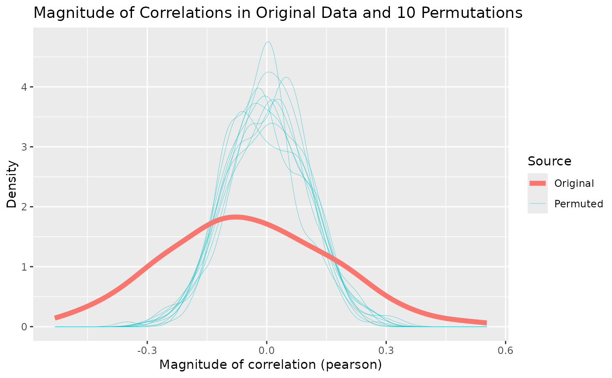
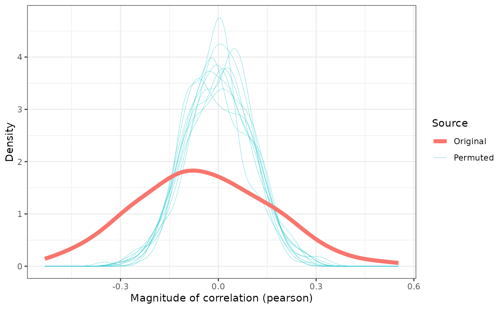

Plot distribution of correlations from correlation_test object
Source: R/correlation_plots.R
plot_correlation_magnitudes.RdThis plot type is used in Brand et al. (2021). It presents the magnitudes of the correlations from the real data as a solid red line, and the correlations from each iteration of the permutation test as light blue lines. This gives a visual sense of the distribution of random correlations compared with those in the actual data. If there are significant pairwise correlations in the data, the thick red line should be visually lower and wider across the plot than the thinner blue lines. If there are no significant pairwise correlations, then the thick red line will have the same shape as the blue lines.
References
Brand, James, Jen Hay, Lynn Clark, Kevin Watson & Márton Sóskuthy (2021): Systematic co-variation of monophthongs across speakers of New Zealand English. Journal of Phonetics. Elsevier. 88. 101096. doi:10.1016/j.wocn.2021.101096
Examples
# Test correlations (use at least n = 100)
cor_test <- correlation_test(onze_intercepts |>
dplyr::select(-speaker), n = 10)
cor_plot <- plot_correlation_magnitudes(cor_test)
cor_plot

# modify plot using `ggplot2` functions, e.g.
cor_plot +
ggplot2::labs(title = NULL) +
ggplot2::theme_bw()
